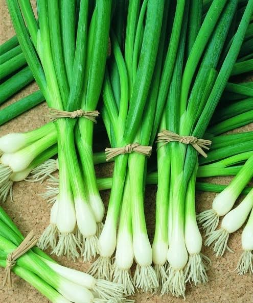

Horta Escolar Viva

A cebolinha (Allium fistulosum) é uma hortaliça aromática muito utilizada na culinária brasileira. Suas folhas verdes e cilíndricas possuem sabor suave e são excelentes para temperar saladas, sopas, carnes, peixes e diversos outros pratos.
Originária da Ásia, especialmente da China e da Sibéria.
Durante a floração, atrai abelhas, borboletas e outros insetos polinizadores.
Folhas e talos.
A cebolinha pertence à mesma família da cebola, do alho e do alho-poró, sendo muito apreciada pelo aroma e sabor delicados.
Suas flores fornecem néctar para diversos polinizadores e ajudam a aumentar a biodiversidade da horta escolar.
Pode ser cultivada durante todo o ano, principalmente em regiões de clima ameno.
Escaneie o QR Code para acessar esta página pelo celular.